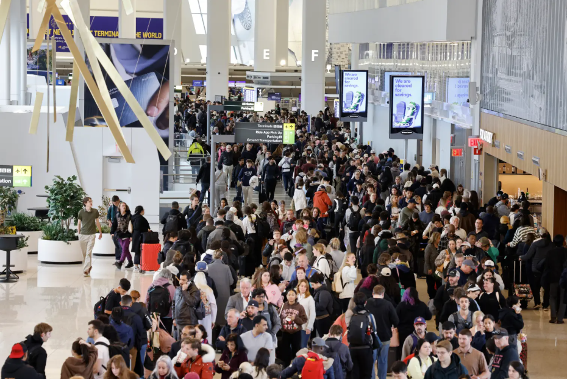
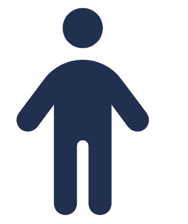
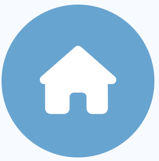

Why I Started This

Why I started this
My family was flying to Florida to visit my mom. My daughter, who is autistic, generally likes to travel. We always pack a go bag with her must-have items: fidgets, snacks, chewelry, noise-canceling headphones and preloaded music.
But that day, LaGuardia was packed. We had left plenty of time, yet the security line was a nightmare.
The staff at LaGuardia were incredibly helpful. They knew some of the signs to look for. Still, the day would have gone much better if I had known how to travel calmly through the skies.
This website is for anyone in a similar situation.
Safe travels, calm skies, and best wishes.
A.J. Aronoff
Story Builder
Fill in the boxes on the left and the story fills in on the right — instantly. Use the buttons below to save your story to your device or reload a saved one.
Tell us about your traveller
✈ My Travel Story
One Guide, Two Voices
Every step of the trip has a plan for the parent and a story for the child.

For the Parent
- Tips for each travel stage
- Step-by-step checklists
- Meltdown plan: before, during, after
For the Child
- Simple "I" stories, read together
- What helps me feel calm
- My own travel story — just for me
- Always from MY point of view
The Journey — Step by Step
Five stages from the child's point of view. Plus a go bag, a meltdown plan, and schedule tips for time zones and delays.

Home
Talk, story, book & pack
Airport
Lanyard, TSA, waiting
On the Plane
Headphones, snacks, gum
Destination
Familiar things waiting for you
Going Home
A story for the trip back
For the Parent
- Each stage has a checklist to prepare in advance
- Build in extra time — always
- Time-zone planning and delay backup plan
- Go bag packed the night before
For the Child
- The story follows me — not the other way around
- I know what comes next at every stage
- I have my comfort item at every step
- When I land, familiar things are waiting
Helpful Hints
Easy to miss, life-changing. Most of these must be set up before the flight.
Sunflower Lanyard
The Hidden Disabilities Sunflower quietly tells airport and airline staff: this traveller may need extra time, patience or help. Available at most major airports.
DPNA Code
Ask the airline to add the Disabled Passenger — No Advance Warning code to your booking. This ensures staff are briefed and pre-boarding may be offered.
TSA Cares
Call TSA Cares 72 hours before your flight. A TSA officer can meet you at the checkpoint to guide your family through security — calmly and kindly.
More Hidden Help
- ⭐ Wings for Autism — airport rehearsal days for families
- 🛋 Airport Sensory Rooms — quiet, calm spaces airside
- ⭐ TSA PreCheck — shorter, calmer security lanes
- 🚪 Pre-boarding — ask the gate agent early
- 🪪 Autism Assistance Cards — wallet card for staff
What This Means for Me
- I can wear my sunflower lanyard — it tells people I might need a little extra kindness
- A helper may meet us at security to make it easier
- We might get to board the plane first — before it gets crowded
- If I feel overwhelmed, there may be a quiet room at the airport
Pack the Calm, Ship the Rest
The go bag travels with you. The familiar things can arrive first.
The Go Bag
- Noise-canceling headphones
- Preloaded music or audiobook
- Fidget toys
- Chewelry
- Favourite snacks
- Comfort item (small blanket / stuffed animal)
- Printed social story
- Autism assistance card
- Reusable water bottle
📦 Ship Ahead
Consider shipping to the destination before you travel:
- Favourite foods and snacks
- Preferred pillow or blanket
- Familiar bath products
- Extra comfort items
- Activity supplies
💡 Tip: Amazon ships to hotels. Ship 2 days before you fly. Familiar things waiting = a calmer arrival.
💡 When familiar things are already there, the new place feels like home faster.
Staying Calm — Before, During & After
Travel breaks routines. These strategies help protect the calm — for child and parent alike.
🌅 Before
- Read the social story together
- Put on the Sunflower Lanyard
- Make the schedule visible
- Spot the triggers early
- Pack the go bag the night before
- Set up TSA Cares and DPNA in advance
- Build in extra time — always
- Plan for delays with a 'what if' card
✈ During
- Headphones on early
- Fidgets in hand
- Keep the child safe first
- Reduce noise and light
- Use fewer words — calm voice
- Find the quiet spot
- Deep breaths together
- "We are safe."
- "We are almost there."
🌿 After
- Comfort item immediately
- Water (reusable bottle)
- No blame. No shame. Ever.
- Rest first — celebrate later
- Note the trigger for next time
- Record what worked in the Trip Review
- Next trip starts smarter than this one
For the Parent
You are doing something brave and loving. Every trip you take adds to your knowledge. The meltdown plan is not a sign of failure — it is a sign of preparation. You are the calm your child needs.
For the Child
- When I feel worried, I can tell a grown-up
- I can squeeze my fidget or hold my comfort item
- I can take slow, deep breaths
- Someone who loves me is right here with me
- I am safe. I am loved. I can do this.